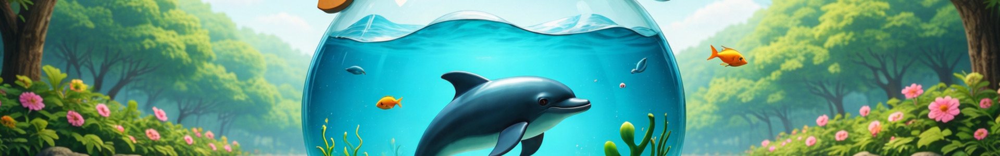

📦 Peso: 158 KB
📐 Resolución: 1920×300
🎯 Fuente: Recortada.png (panorámica pre-cortada)
⚙️ Calidad JPEG: 90%
Generada desde la versión ya recortada en formato panorámico. La más liviana de todas, ideal si priorizas velocidad de carga. Puede tener ligera pérdida por doble procesamiento.
